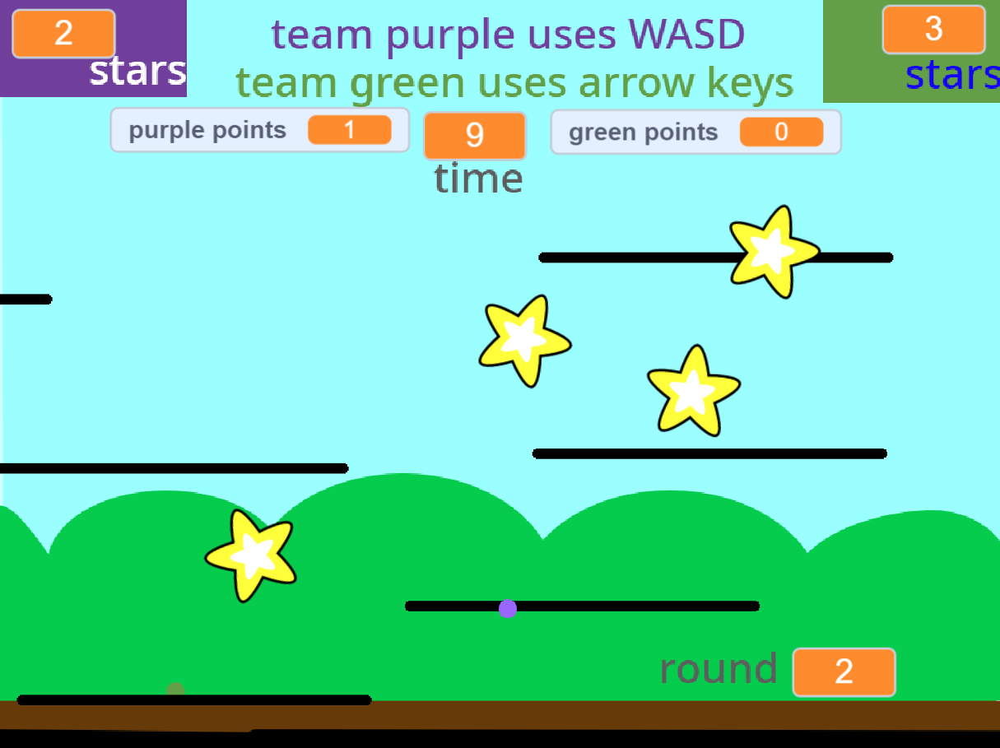
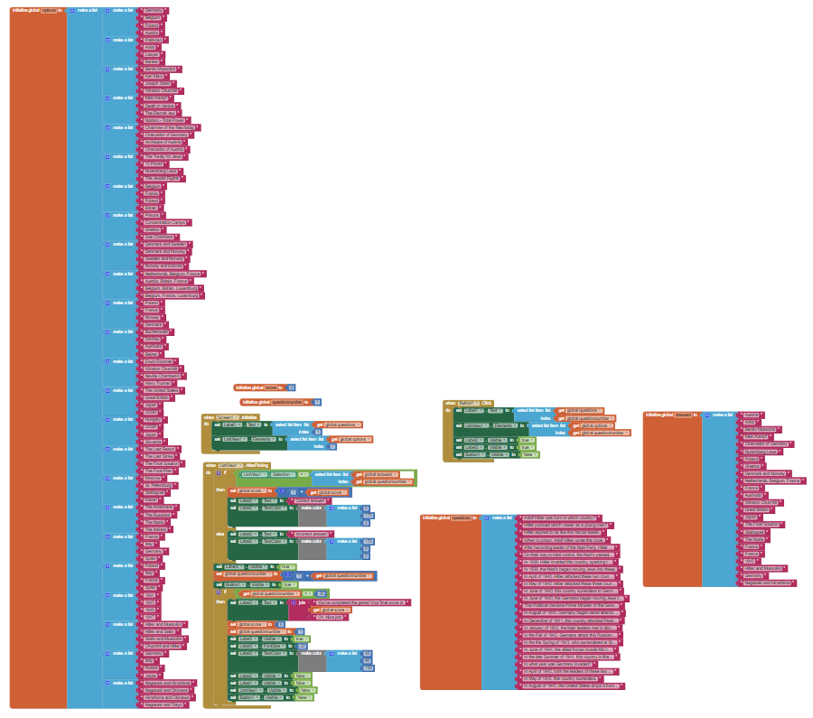
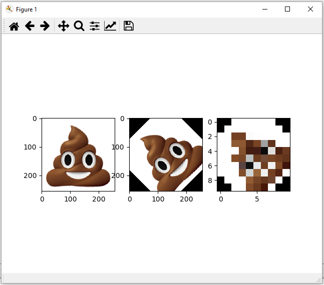
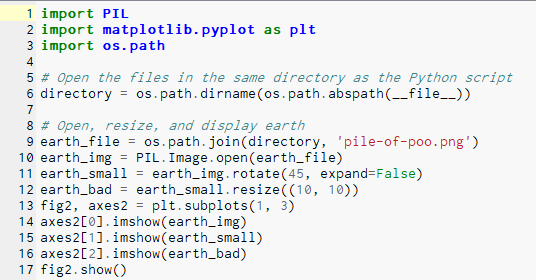
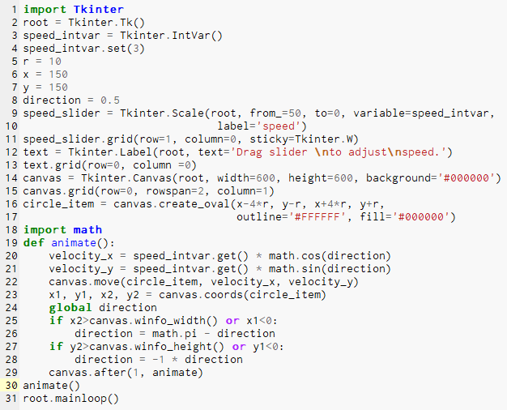
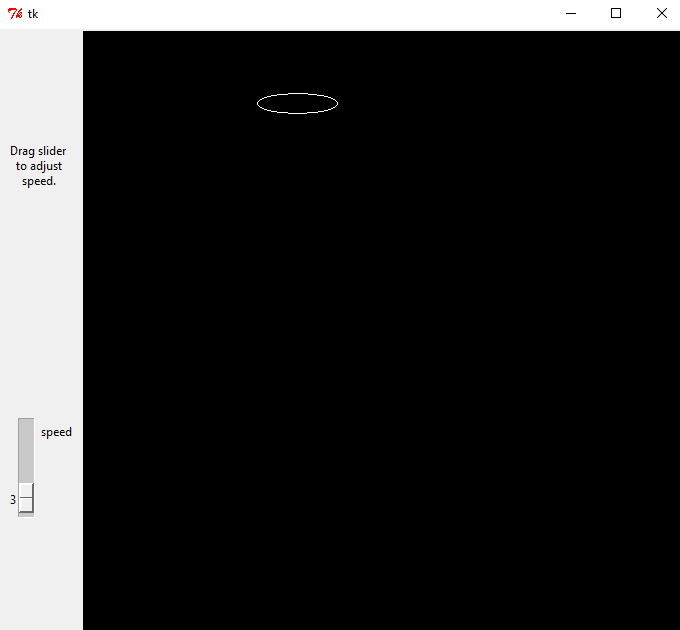
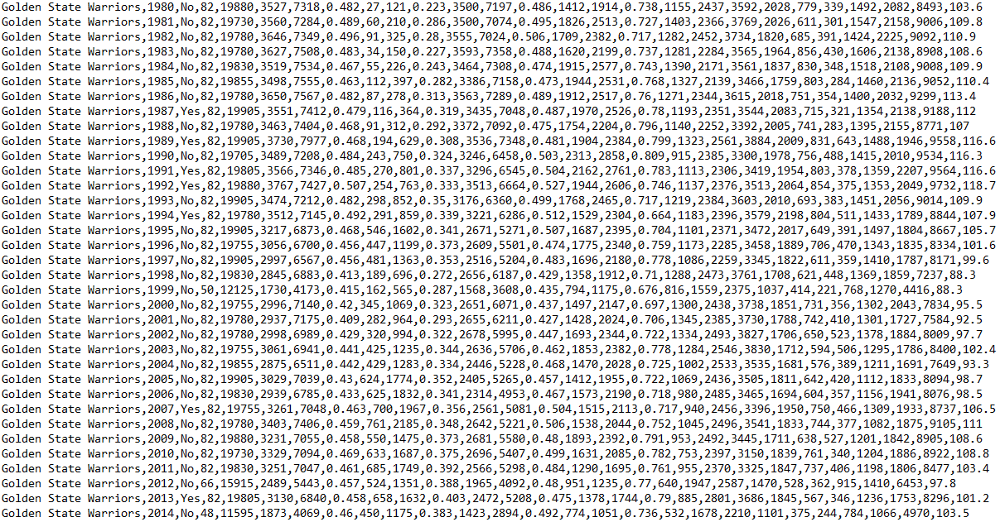
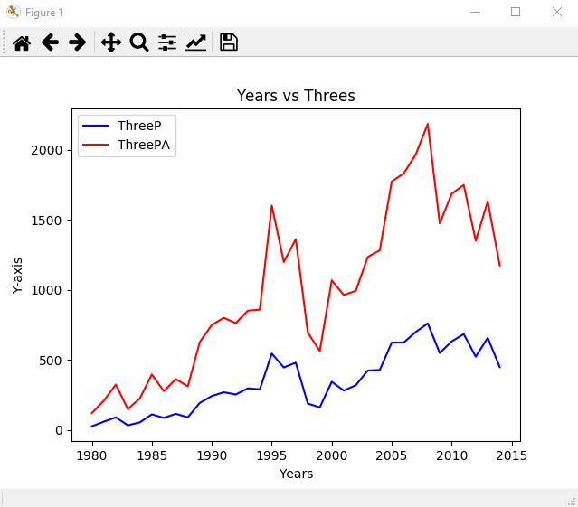
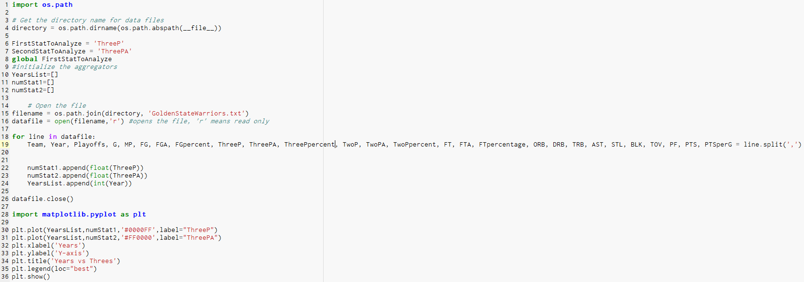

Portfolio
My beautiful projects
Scratch Game
Feb 15, 2019
Click the image to open Scratch

App Inventor Multiple Choice Quiz
Mar 7, 2019
A quiz about World War 2 which ws made in MIT App Inventor. We used the block code of App Inventor to create a working program that would allow the user to choose from a list of options

Interactive Fiction Game - Dwight's Story
Mar 21, 2019
An interactive fiction game accomplished using python. The user interacts with the command box on the right side, giving one-letter responses in order to advance the story through a few different pre-determined paths. The image below shows a flow chart of different paths through which the user can advance.

GPA Calculator
April 8, 2019
A Calculator made in python that calculates the total number and number of values given to the program, and returns the average after the user has specified they would like it to be calculated.
Confusing, Annoying, and Feature-lacking Photoshop made with Python
May 17, 2019
The example image is a pile of poop emoji. It is first rotated, then pixelated. I made sure that each step along the way would be presented on an image, which you can see on the left.
 Google Docs 1.4 response questions
DVD Screensaver with an interactive Python GUI
May 27, 2019
A G.U.I., (Graphical User Interface) in the form of a slider is used in this python program to control the speed of a DVD screensaver.
 
Using Python to Interpret and Graph Big Data
June 3, 2019
This Python program opens a text file and uses algorithms to assign statistics to variables in a list, and then proceeds to graph the statistics.
  